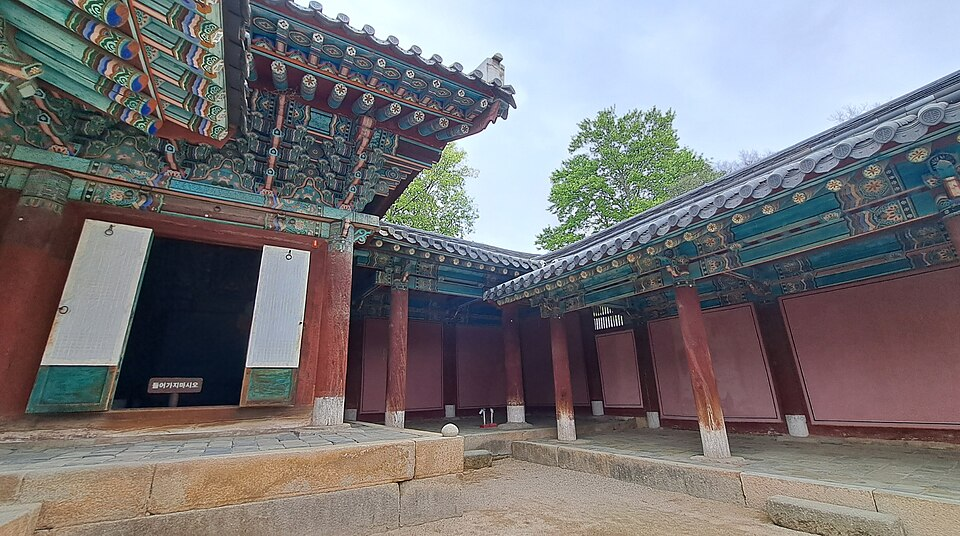
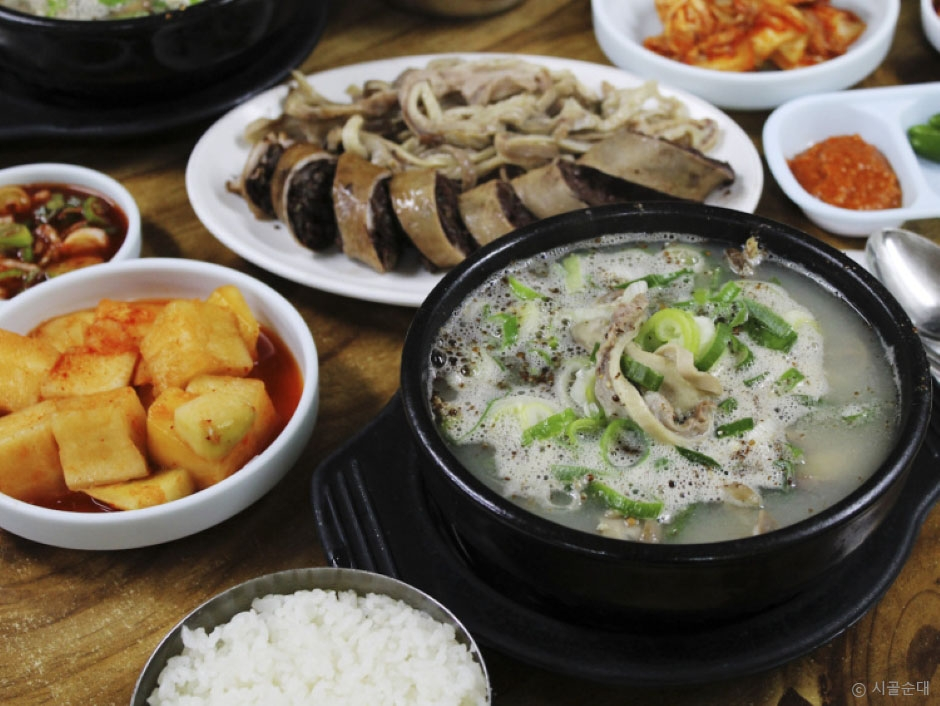

Jeonju-Gourmetführer: Bibimbap, Straßenessen im Hanok-Dorf, Nambu-Nachtmarkt und Gunsan-Tteokgalbi (aus Reisevideos)
Ein videobasierter Leitfaden zum Essen in Jeonju, einer UNESCO-Stadt der Gastronomie, und in der Region Jeollabuk-do. Er behandelt Bibimbap, Tteokgalbi und Hanjeongsik, Snacks aus dem Hanok-Dorf, den Nachtmarkt am Nambu-Markt und den Gyeonggijeon-Schrein. Außerdem geht es um Tteokgalbi aus Gunsan und ein Sundae-Gukbap-Lokal in Jinan.
Videos auf der Karte ansehen →
Jeonju in Jeollabuk-do ist eine UNESCO-Stadt der Gastronomie und eng mit Bibimbap verbunden. Viele Reise-Vlogger und koreanische Food-Shows waren schon hier essen. Dieser Leitfaden sammelt, was sie tatsächlich gegessen haben und wo. Er behandelt Bibimbap, Tteokgalbi (gegrillte Rinderrippen-Patties), Hanjeongsik (ein Menü aus mehreren Gerichten), Snacks aus dem Hanok-Dorf und den Nachtmarkt am Nambu-Markt. Außerdem führt ein kurzer Abstecher nach Gunsan und Jinan.
Jeonju-Bibimbap: Dort essen, wo es begann
Bibimbap ist in den meisten Videos der Ausgangspunkt. In Original Bibimbap & Night Market in Jeonju isst der Creator Bibimbap im Hanguk Jip in der Eojin-gil. Luke Martin besucht in seiner Ultimate Street Food Tour in Jeonju dasselbe Restaurant (dort als Hankook Jib geschrieben). In seiner Videobeschreibung gibt er zu, dass er wegen des Bibimbap gekommen ist, meint aber, das Bulgogi "könnte der eigentliche Grund" sein, Jeonju zu besuchen. Es lohnt sich also, beides zu probieren.
In 24 Hours in Jeonju – Hanok Village & Best Bibimbap isst der Gastgeber authentisches Jeonju-Bibimbap in einem traditionellen Restaurant. Es kommt mit frischem Gemüse, rohem Rindfleisch, Reis und hausgemachten Saucen. Die koreanische Webshow Popular Restaurants (인기 맛집) wählt einen spielerischen Ansatz. Der Komiker Kwak Beom, gebürtig aus Jeonju, besucht die Stadt mit Wonee und Minami von der Gruppe Lescenne. Sie greifen das Gerücht auf, dass die Einheimischen in Jeonju gar kein Jeonju-Bibimbap essen. Dann lassen sie ein von Menschen empfohlenes Restaurant gegen ein von einer Maschine empfohlenes antreten, um das beste Bibimbap der Stadt zu finden.
Tteokgalbi und Hanjeongsik
Tteokgalbi
Das Video Original Bibimbap & Night Market macht Halt beim Gyodong Tteokgalbi in Pungnam-dong. Steph und Pete waren einen Monat in Seoul und kommen in Jeonju Vlog – Gyeonggijeon Shrine & Tteokgalbi für ein paar Tage nach Jeonju. Sie besuchen den Schrein und essen Tteokgalbi.
Hanjeongsik
Jeonju ist auch für Hanjeongsik bekannt, ein Menü, bei dem immer neue Gerichte aufgetragen werden, bis der Tisch voll ist. In Welcome, First Time in Korea? von MBC every1 (EP.266) reisen vier Brüder aus Neuseeland nach Jeonju. Sie essen ein komplettes Hanjeongsik-Menü und lernen am Gyeonggijeon-Schrein etwas über die Geschichte der Joseon-Dynastie. Danach essen sie Bingsu (geschabtes Eis) und sehen traditionelle Darbietungen wie Pansori und Seiltanz.
Straßenessen im Hanok-Dorf und Nachtmarkt am Nambu-Markt
Aaron und Claire stellen in Korean Street Food at Jeonju Hanok Village Snacks in den Mittelpunkt. Ihre Videobeschreibung nennt die folgenden Preise zum Zeitpunkt der Aufnahme, die sich seither geändert haben können:

📍 Hanok-Dorf Jeonju · Naver Map · Google Maps
- Bibim Bbang (Bibimbap-Brot): 3.000 Won
- Bool Ggo-Cheng-i (scharfer Bacon-Roll mit Käse): 6.000 Won
- Hähnchenspieß mit Käse: 4.000 Won
- Hähnchenflügel mit gebratenem Reis gefüllt: 4.000 Won
In 24 Hours in Jeonju übernachtet der Gastgeber in einem Hanok, einem traditionellen koreanischen Haus. Er probiert Choco Pie von der bekannten PNB-Bäckerei und etwas brutzelnden gegrillten Käse. Das Original-Bibimbap-Video besucht außerdem Da Urang Dumplings in der Gyeonggijeon-gil und Oehalmeonisomssi Cafe. Den Tag beendet es auf dem Nachtmarkt am Nambu-Markt. Auch Luke Martins Tour führt zum Nambu-Markt und zu einem Teigtaschenladen.
Gyeonggijeon-Schrein: Geschichte zwischen den Mahlzeiten

📍 Gyeonggijeon-Schrein · Naver Map · Google Maps
Gyeonggijeon ist ein Schrein aus der Joseon-Zeit im Gebiet des Hanok-Dorfs. Sowohl die neuseeländischen Brüder als auch Steph und Pete besuchen ihn. Hanbok-Verleih gehört zur Atmosphäre des Hanok-Dorfs, und in mehreren Videos sieht man Menschen in traditioneller Kleidung spazieren.
Jenseits von Jeonju: Gunsan-Tteokgalbi und Jinan-Sundae-Gukbap
In einem koreanischen Mukbang-Video (Esshow) bestellt der Creator 10 Portionen eines Tteokgalbi aus Gunsan, für den Menschen angeblich aus dem ganzen Land anreisen. Wer Gunsans Version mit der aus Jeonju vergleichen möchte, sollte es sich ansehen. In Jinan serviert Sigol Sundae Sundae Gukbap, eine koreanische Blutwurst-Suppe mit Reis. Das Lokal ist nur etwa drei Stunden am Tag geöffnet, der Besuch muss also gut getimt werden.

📍 Sigol Sundae Jinan ) · Naver Map · Google Maps
Planungstipps
- Mehrere Orte liegen nah beieinander rund um den Gyeonggijeon-Schrein, sodass man zwischen ihnen und dem Schrein zu Fuß gehen kann. Dazu gehören Hanguk Jip (Eojin-gil), Da Urang Dumplings (Gyeonggijeon-gil) und der Straßenessen-Stopp aus dem Video von Aaron und Claire (29 Eojin-gil).
- Viele Videos folgen demselben Muster: tagsüber Hanok-Dorf und Gyeonggijeon, abends der Nachtmarkt am Nambu-Markt.
- Bibimbap, Tteokgalbi und Hanjeongsik machen alle satt. Plane pro Tag ein bis zwei davon ein und fülle die Lücken mit Straßensnacks.
- Sigol Sundae in Jinan hat sehr kurze Öffnungszeiten, prüfe also vor der Fahrt, ob es geöffnet ist.
- Die in den Videos genannten Preise spiegeln den Zeitpunkt der Aufnahme wider.
Orte aus den Videos
- Hanok-Dorf Jeonju (전주 한옥마을) (전주 한옥마을) Bibimbap, Straßenessen, Hanbok-Verleih Naver Map Google Maps
- Sigol Sundae Jinan (시골순대 (진안)) (시골순대 (진안)) Sundae Gukbap (ca. drei Stunden am Tag geöffnet) Naver Map Google Maps
- Gyeonggijeon-Schrein (경기전) (경기전) Historischer Schrein aus der Joseon-Zeit Naver Map Google Maps
Orte und Öffnungszeiten können sich ändern – bitte vorher auf der Karte prüfen.
Passende Videos
 Original Bibimbap & Night Market in Jeonju
Original Bibimbap & Night Market in Jeonju
 Ultimate Street Food Tour in Jeonju – Famous Bibimbap
Ultimate Street Food Tour in Jeonju – Famous Bibimbap
 24 Hours in Jeonju – Hanok Village & Best Bibimbap
24 Hours in Jeonju – Hanok Village & Best Bibimbap
 Korean Street Food at Jeonju Hanok Village
Korean Street Food at Jeonju Hanok Village
 뉴질랜드 사 형제의 전주 여행 – 한정식, 경기전 (EP.266)
뉴질랜드 사 형제의 전주 여행 – 한정식, 경기전 (EP.266)
 Jeonju Vlog – Gyeonggijeon Shrine & Tteokgalbi
Jeonju Vlog – Gyeonggijeon Shrine & Tteokgalbi
 전주의 아들이 추천하는 전주 1등 맛집🍚 (feat.리센느 원이,미나미) | 인기 맛집 | 곽범 [EN/JP]
전주의 아들이 추천하는 전주 1등 맛집🍚 (feat.리센느 원이,미나미) | 인기 맛집 | 곽범 [EN/JP]
 단체로 놀라셨어요ㅋㅋ👥👥 전국에서 찾아온다는 군산 떡갈비 10인분 먹방
단체로 놀라셨어요ㅋㅋ👥👥 전국에서 찾아온다는 군산 떡갈비 10인분 먹방
Weitere Artikel
- Jeollanam-do Food Guide: Yeosu-Krabben, Mokpo-Meeresfrüchte und Beilagen sowie Gwangju-Essen aus koreanischen Food-Shows
- Seouls Straßenessen & Märkte: Was man auf dem Gwangjang-Markt, dem Noryangjin-Fischmarkt und mehr essen sollte (nach Food-Tour-Videos)
- Seoul K-Beauty-Guide: Olive Young shoppen in Myeongdong und Seongsu, Hautkliniken und Beauty-Behandlungen
- Koreas Küche nach Region: Was man in Seoul, Busan, Jeju, Mokpo, Daegu, Jeonju und anderswo isst (nach beliebten Mukbang- und Food-YouTube-Videos)
- Jeju-Insel Essensführer: Schwarzes Schweinefleisch, Meeresfrüchte, Dongmun-Nachtmarkt und Sehenswürdigkeiten unterwegs
- Gyeongju & Gyeongbuk Reiseführer: Silla-Geschichte, Andong, Pohang und lokales Essen